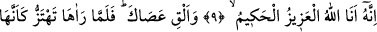
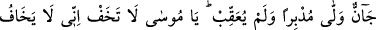

HZ. MÛSÂ VE MÛCİZELERİ
7. Hani Mûsâ, âilesine şöyle demişti: Gerçekten ben bir ateş gördüm. (Gidip) size
oradan bir haber getireceğim, yahut bir ateş parçası getireceğim, umarım ki
ısınırsınız!
8. Oraya geldiğinde şöyle seslenildi: Ateşin bulunduğu yerdeki ve çevresindekiler
mübarek kılınmıştır! Âlemlerin Rabbi olan Allah, eksikliklerden münezzehtir!
9. Ey Mûsâ! İyi bil ki, ben, mutlak galip ve hikmet sâhibi olan Allâh’ım!
10. Asânı at! Mûsâ (asâyı atıp) onu yılan gibi deprenir görünce dönüp arkasına
bakmadan kaçtı. (Kendisine dedik ki): Ey Mûsâ! Korkma; çünkü benim huzurumda
peygamberler korkmaz.
11. Ancak, kim haksızlık eder, sonra, işlediği kötülük yerine iyilik yaparsa, bilsin
ki ben (ona karşı da) çok bağışlayıcıyım, çok merhamet sâhibiyim.
12. Elini koynuna sok da kusursuz bembeyaz çıksın. Dokuz mucize ile Firavun ve
kavmine (git). Çünkü onlar artık yoldan çıkmış bir kavim olmuşlardır.
13. Mucizelerimiz onların gözleri önüne serilince: “Bu, apaçık bir büyüdür”
dediler.
14. Kendileri de bunlara yakînen inandıkları halde, zulüm ve kibirlerinden ötürü
onları inkâr ettiler. Bozguncuların sonunun nice olduğuna bir bak!